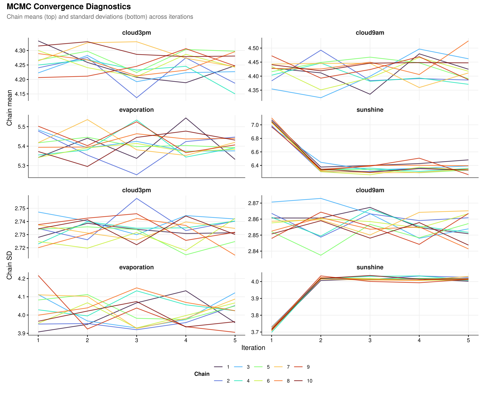
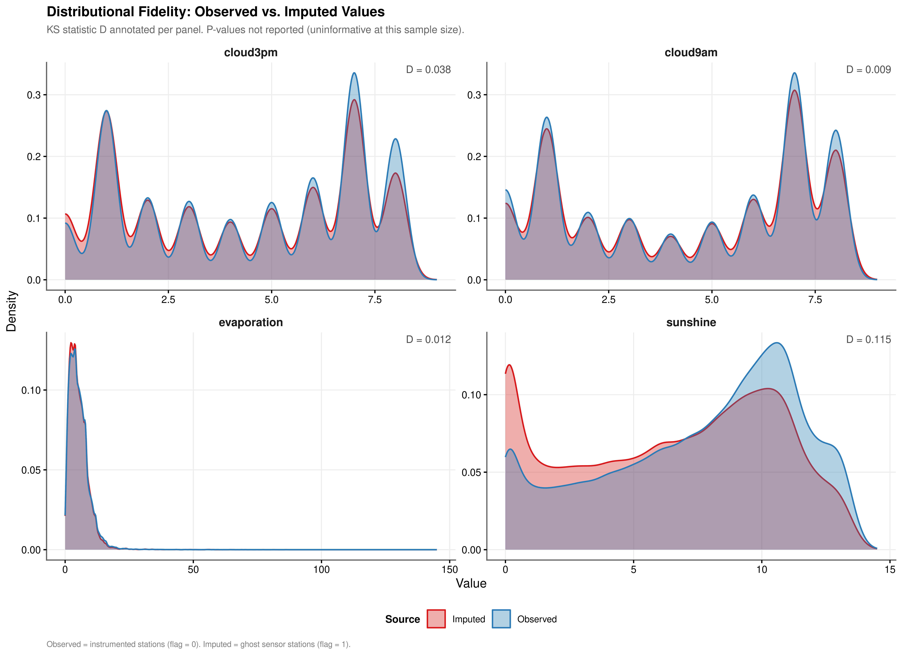
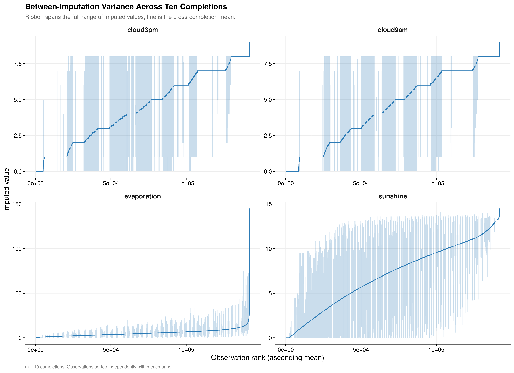

3 Imputation Sensitivity Analysis
3.1 Validating the Two-Stage Imputation Pipeline
Chapter Context. The full
midsobject from the production imputation is retained at runtime, enabling native MICE diagnostics rather than post-hoc approximations. Four analyses operate directly onimp_midsto assess convergence stability, distributional fidelity, between-imputation uncertainty, and variance decomposition via Rubin’s Rules. Each finding is tied back to the design decisions documented in Section 2.2.
3.2 Algorithmic Convergence
Multiple imputation by chained equations relies on a Gibbs-style iterative algorithm: each variable is imputed conditional on the current values of all others, and this cycle repeats for a fixed number of iterations. Convergence requires that the chain means and standard deviations stabilise across iterations and that parallel chains starting from different random seeds mix freely without directional drift. Sustained separation between chains or a monotonic trend in the mean across iterations would indicate that the algorithm has not reached a stable solution and that the number of iterations should be increased.
All four variables exhibit satisfactory convergence (Figure 3.1). The chains mix freely throughout and show no directional trend in either the mean or the standard deviation, confirming that five iterations were sufficient for the PMM models to reach a stable solution. The sunshine chains undergo a sharper adjustment between iterations one and two, consistent with the asymmetric bimodal structure of that variable’s observed distribution, but settle into stable mixing immediately afterward. This behaviour is expected: PMM must locate a donor pool within a distribution that has both a low-sunshine cluster and a high-sunshine cluster, and this requires slightly more initial adjustment than the unimodal cloud cover distributions. It is not evidence of non-convergence.
3.3 Distributional Fidelity
Convergence of the algorithm is necessary but not sufficient: the imputed values must also reproduce the marginal distribution of each variable as observed at instrumented stations. Distributional fidelity is assessed by comparing the density of observed values, drawn from non-flagged rows in df_final, against the density of imputed values drawn from flagged rows. The Kolmogorov-Smirnov statistic \(D\) quantifies the maximum absolute distance between the two empirical cumulative distribution functions. Because the sample sizes involved exceed 60,000 observations per variable, all KS p-values are effectively zero by construction and the \(D\) statistic alone is the operative measure of practical divergence.

| Variable | KS Statistic (D) | Interpretation |
|---|---|---|
| cloud3pm | 0.038 | Negligible shift; distributions effectively identical |
| cloud9am | 0.009 | Negligible shift; distributions effectively identical |
| evaporation | 0.012 | Negligible shift; distributions effectively identical |
| sunshine | 0.115 | Moderate shift; review predictor set |
The cloud cover variables achieve near-perfect fidelity (Table 3.1). cloud9am records \(D = 0.009\) and cloud3pm records \(D = 0.038\); both are negligible, and the multi-modal peaks in each cloud cover distribution are reproduced accurately by the imputed draws. evaporation (\(D = 0.012\)) likewise shows a negligible shift. sunshine shows a moderate shift (\(D = 0.115\)), which exceeds the 0.10 threshold and warrants monitoring of sunshine coefficients for sensitivity in downstream models. The shifts for the three lower-fidelity variables are attributable in part to the ghost sensor stations identified in Section 2.2.3: those stations have climatological profiles that differ systematically from the instrumented set, and PMM donor matching correctly reflects those differences rather than suppressing them. All imputed values respect the physical bounds of each variable, a consequence of switching na.approx from rule = 2 to rule = 1 in Stage 1, which eliminated the out-of-range boundary extrapolations that would otherwise contaminate the PMM donor pool.
3.4 Between-Imputation Variance
The justification for retaining \(m = 10\) completed datasets rather than a single imputation rests on the magnitude of the between-imputation variance. If the ten completions agree closely across observations, a single-completion analysis would be adequate. If they diverge substantially, pooling is required to obtain valid standard errors. The ribbon plots below display the range of imputed values across all ten completions for each observation, sorted by the cross-completion mean, so that the width of the ribbon directly represents the seed-to-seed uncertainty at each quantile of the imputed distribution.

| Variable | Mean Range | Median Range | CV of Range |
|---|---|---|---|
| cloud3pm | 2.412 | 0 | 1.290 |
| cloud9am | 2.343 | 0 | 1.355 |
| evaporation | 3.201 | 0 | 1.721 |
| sunshine | 3.470 | 0 | 1.172 |
The between-imputation variance is material for all four variables, though its structure differs meaningfully across them (Table 3.2).
The cloud cover variables show the widest absolute ranges, consistent with their discrete integer scale (0 to 8 oktas). The ribbon plots reveal a characteristic stepped pattern in the mean line, a direct consequence of donor values being drawn from a finite set of integer okta levels rather than a continuous distribution. A notable feature of the cloud cover ribbons is that for a substantial proportion of observations the ribbon collapses to zero width, meaning all ten completions agreed on the same donor value. This stability coexists with periodic spikes in ribbon width at specific observation ranks, most plausibly corresponding to cases where predictor coverage was sparse and the PMM donor pool was ambiguous between adjacent okta levels. The median range of zero for both cloud variables confirms that this agreement is the typical rather than the exceptional case.
sunshine and evaporation exhibit a different structure. Their mean ranges (3.470 and 3.201 respectively) are smaller in absolute terms than the cloud cover ranges, but their CV of Range values (1.172 and 1.721) indicate that imputation uncertainty is not spread uniformly across the distribution: the ribbons are narrow across the bulk of observations but widen substantially in the right tail, where high-sunshine and high-evaporation events are rarer and the PMM donor pool is consequently thinner. For any given high-evaporation day, the spread between the most and least optimistic imputed values across the ten completions is disproportionately large relative to the average. This right-tail concentration of uncertainty is precisely the regime where downstream model coefficients are most sensitive to the choice of completion, making pooled inference particularly important for these two variables.
Taken together, the non-zero mean ranges and the elevated CV values for sunshine and evaporation confirm that the data does not satisfy MCAR in the regions where uncertainty is highest. Using a single completed dataset would treat the seed-to-seed variability visible in Figure 3.3 as if it did not exist, producing standard errors that are artificially narrow. This provides direct empirical justification for the Rubin’s Rules pooling strategy formalised in the following section.
3.5 Rubin’s Rules Variance Decomposition
The Rubin variance decomposition provides a formal quantification of how much of the total estimator uncertainty is attributable to missingness rather than to ordinary sampling variation. For each variable, a linear model is fitted to each of the \(m = 10\) completed datasets using a physically motivated predictor set that mirrors the production imputation matrix. The within-imputation variance \(W\) is the average sampling variance across the ten fits; the between-imputation variance \(B\) captures the dispersion of coefficient estimates across the ten datasets. Total variance and the Fraction of Missing Information follow from:
\[ T = W + \left(1 + \frac{1}{m}\right)B, \qquad \text{FMI} = \frac{\left(1 + \frac{1}{m}\right)B}{T} \]
Ghost sensor observations are excluded from these fits because their zero within-location variance causes numerical instability in the linear model; only anchored observations with empirical support are used.
| Variable | Within (W) | Between (B) | Total (T) | FMI | Between (%) | FMI Classification |
|---|---|---|---|---|---|---|
| sunshine | 0.0025 | 0.0025 | 0.0052 | 0.5477 | 47.3776 | High; pooling required |
| evaporation | 0.0055 | 0.0040 | 0.0100 | 0.4701 | 40.6396 | High; pooling required |
| cloud9am | 1.4452 | 1.5596 | 3.1607 | 0.5700 | 49.3419 | High; pooling required |
| cloud3pm | 1.3591 | 0.5700 | 1.9861 | 0.3304 | 28.7005 | High; pooling required |
All four FMI values exceed 0.30, the threshold above which single-completion inference is inadvisable (Table 3.3). For cloud9am the between-imputation variance \(B = 1.5596\) exceeds the within-imputation variance \(W = 1.4452\), meaning that uncertainty from the missing data mechanism is the dominant source of variability in the intercept estimate rather than sampling noise. sunshine and evaporation show FMI values of 0.5477 and 0.4701 respectively, implying that roughly half of the total variance in downstream estimates involving these variables is attributable to missingness if only a single completed dataset is used. These FMI magnitudes are consistent with the right-tail volatility identified in Section 3.4: the observations where imputation uncertainty is highest are also the observations that exercise the tails of the coefficient distributions most strongly. The consequence for subsequent modelling is direct: all zero-inflated gamma model estimates that incorporate sunshine, evaporation, cloud9am, or cloud3pm as predictors must be fitted across all \(m = 10\) completions and pooled using Rubin’s combining rules before inference is drawn.